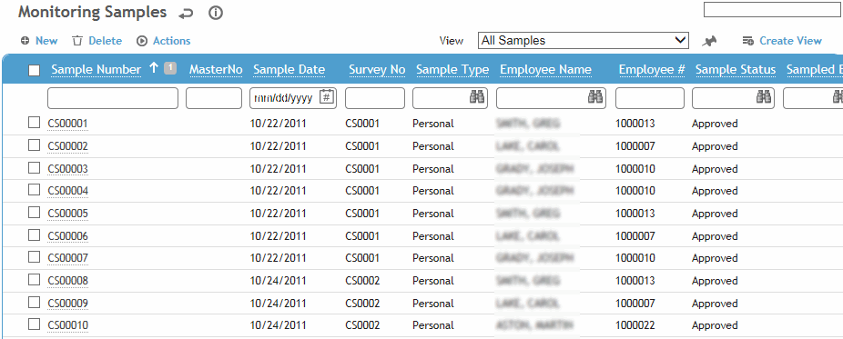
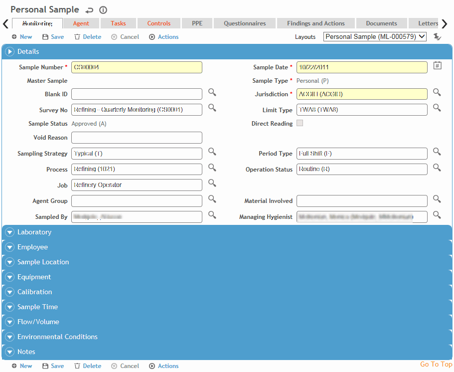

The Monitoring module covers several types of exposure monitoring, such as air, bulk, wipe, IAQ, and radiation. While entering information about a monitoring sample, you can enter sample details such as employee, process, operation status, sample location, and geolocation coordinates (if added to a custom layout).
To print a blank monitoring sample record form to record sample information while working in the field, open an existing sample and choose Actions»Print Blank Sampling Form.
You can link a sample to a survey (users assigned the technician/consultant role can only link a sample to a survey if they are the survey creator or have been granted editor access). If you want to see more details of the survey before creating the sample, open the survey first. You can create a sample directly from the survey’s Sample tab. For more information, see Creating a Survey.
An IH user can use the Import Utility to import new and/or changes to monitoring sample records and corresponding child monitoring sample results records from the same file. This will automatically link the parent and child records.
In the Industrial Hygiene menu, click Monitoring. (The list may appear in different colors if the IHSampleStatus look-up table has been defined as such. If you chose a view that includes Agents, each sample will be listed by each agent along with an icon representing its exposure range.)
Use the “All Samples (Including Results)” view to see fields such as >< (Limit), TWA and %OEL directly in the list without having to open individual records.

Hygienists identified as Technician/Consultant in the Users table are restricted in what functions they can view:
• they cannot view sample results (concentration, TWA, %OEL) until they are approved (although they can see the agents attached to a sample)
• they cannot change sample status
• they can access only sample records they created.
Click a link to open a sample, or click New.
To reduce data entry, you can copy a sample record. Open the record and choose Actions»Copy. All information is copied except details unique to the sample (e.g. employee, calibration data, results). If the original sample was linked to another sample, the new sample is not similarly linked (i.e. the Master Sample number is not copied to the new sample) unless you choose to do so (see Copying or Linking a Sample Record).
Change information as required to complete the new sample.
To open all samples with the same survey number, select the checkbox beside a sample that is linked to that survey number, then choose Actions»Open All Samples Linked to Same Survey Number. The first sample opens, and navigation buttons below the tabs allow you to scroll through each sample.
To open linked monitoring samples (see Copying or Linking a Sample Record), select the checkbox beside a sample that shows a master number, then choose Actions»Open All Samples Linked to Same Master Number. The first sample opens, and navigation buttons below the tabs allow you to scroll through each linked sample.
Depending on your system settings, sample numbers may include a set prefix. If the sample number exceeds 999999, you will be prompted to change your the prefix in the system settings so the numbering can restart at 000001.
Select the layout you wish to use (e.g. Area, Personal, Other (Blank, Bulk, or Wipe) or a custom layout that you have created.
The layout determines which fields are available/required on the form; for example, if you select Personal, you must complete the Employee section. If you select any other layout, the Employee section is unavailable (except for Area and Other layouts, which allow selection of Job Position and Exposure Group).

Enter information in the fields on the Monitoring tab. Most of the fields are self-explanatory, but keep in mind the following:
Change the Sample Status if required (and if you have the authority). Some status codes are automatically set based on other actions; for more information, see IHSampleStatus. To see a history of status changes, choose Actions»Sample Status History. These actions are also available on the Agent tab, so you can change the status while viewing results.
The default TWA (time-weighted average) code in the Limit Type field is used to automatically calculate concentrations for time-weighted samples.
To allow this sample to be added to a lab request, select the laboratory then select Add to Lab Requisition. For more information, see Preparing a Lab Requisition. These fields are not available if this is a direct reading sample.
When the Add to Lab Requisition checkbox is selected, the Sample Status updates to Send to Lab. Once the sample is linked to a requisition in the Requisition module, the Sample Status updates to Sent to Lab. If these samples were delivered to a laboratory noted as having an interface in the Laboratory look-up table, then the results fields on the sample will be locked until lab results are returned (sample status = lab work complete), then the fields are unlocked.
If a lab is noted on the samples (manually or by default via the system settings), you can quickly mark multiple Incomplete samples as Add to Lab Requisition from the samples list: select the samples and choose Actions»Add to Lab Requisition. Their status changes to Send to Lab.
The Managing Hygienist defaults to the hygienist linked to the Sampled By user, but you can change it. The look-up for this field is limited to users flagged as “IHUser” and “Managing Hygienist”.
Employee information (employee name, geographic location and so on) is current. If necessary, change the information to correspond to the situation that existed when the sample was taken.
To associate other employees with a personal area sample, use the Representative Employees tab (after the sample is saved).
Select an Analytical Scan if you want the Agent tab to be automatically populated with all analytes that make up that scan. Analytes can be assigned to scans in the IHAgentGroup look-up table.
If the Initial Flow Rate and Final Flow Rate differ by more than a defined amount (based on your company business rules), you may be asked if you want to void the sample.
The Exposure Time defaults to what is defined in the IHLimitType table, but you can modify it to account for time that was not sampled, assumed consistent, or assumed negligible sampled exposure duration. The following calculation will be used:
TWA = (Concentration * Run Time) + (non-sampled Concentration * non-sampled time) / Time Weighting Period Length
where the Non-sampled time = Exposure Time - Run Time, and the Time Weighting Period Length is the value specified in the IHLimitType look-up table for the Limit Type specified on the Monitoring tab.
You will not be able to save the sample if the selected equipment is out of calibration; your layout may or may not display the next calibration date.
Click Save.
On the Agent tab, click a link to edit the results for an agent (or select the checkbox beside an agent and choose Actions»Edit to enter results directly on the Agents tab), or click New to add a new agent and sample results. For more information, see Entering Results Manually.
Select Exclude from Statistics to exclude the sample from the Detailed Noise Monitoring Results report and the statistical analysis run from the IH Risk Assessment module. This exclusion can be overridden when running the queries.
When you add an agent, Cority checks the Standards list for that Agent (in the AgentHazard look-up table) to determine which OEL to use (i.e. the Sample Date of the Monitoring record must fall between the Effective and End Dates of the standard defined for the agent. If the Sample Date does not fall between this date range, the OEL field will be blank).
To print all information on the Monitoring and Agent tabs, and any questionnaire included, click Print.
For information about the remaining tabs, see Completing the Sample Record - Common Tabs.